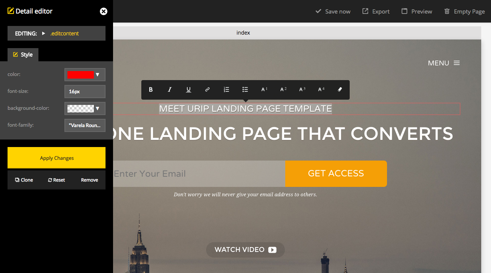
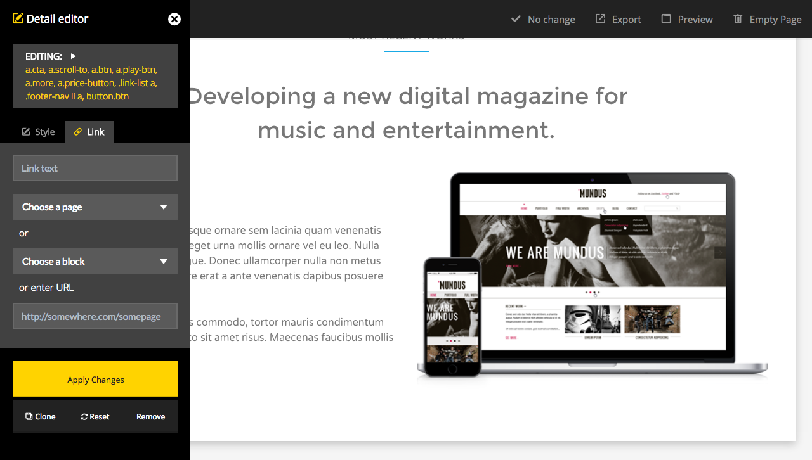
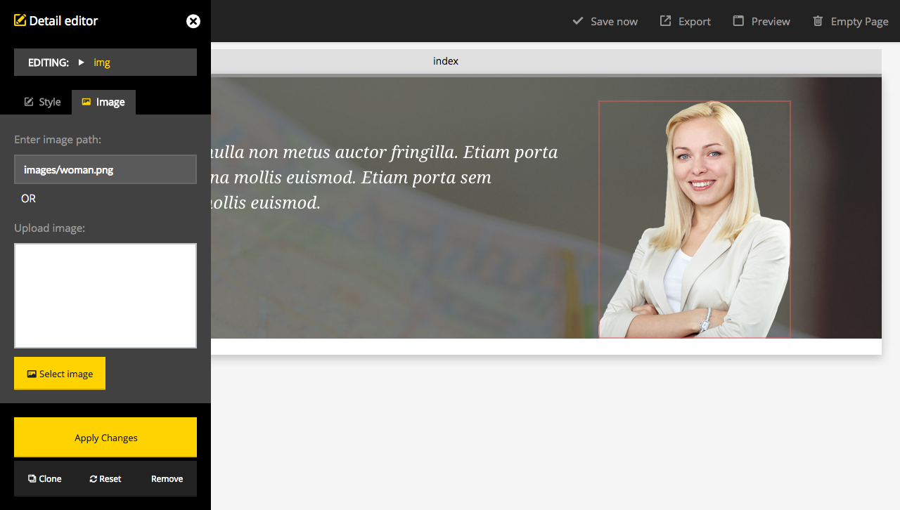
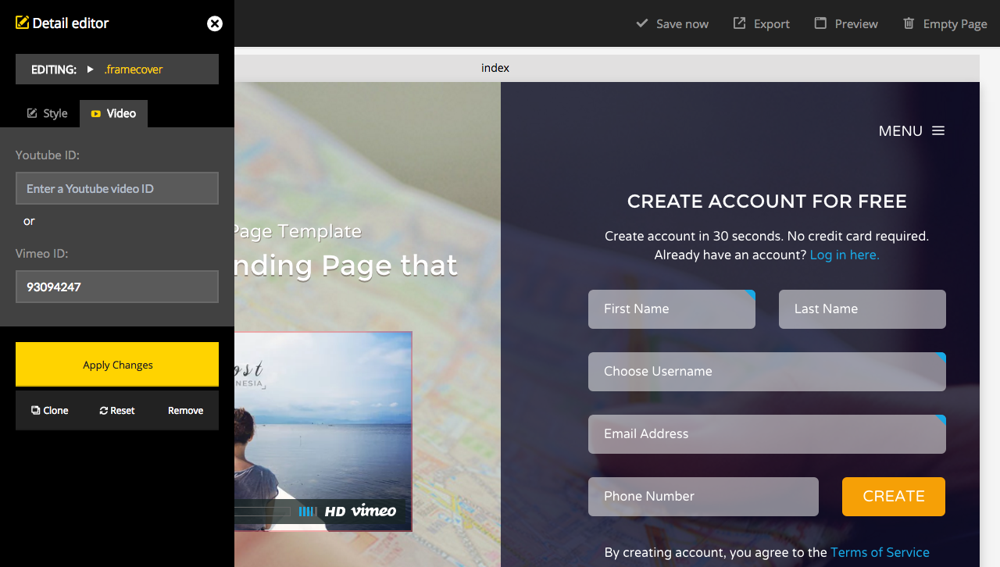
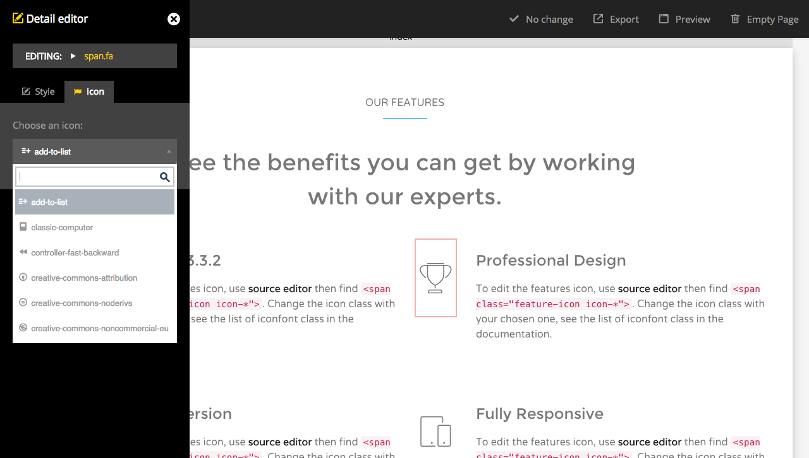

Urip ver 3.0
Builder Documentation
Professional Bootstrap Landing Page Template
created: 04/23/2015 updated: 10/12/2016 by: Works of Wisnu email: xwisnux@worksofwisnu.comProfessional Bootstrap Landing Page Template
created: 04/23/2015 updated: 10/12/2016 by: Works of Wisnu email: xwisnux@worksofwisnu.comThis is the documentation page for the Builder of Urip Landing Page. If you're looking for the documentation for default HTML version please visit HTML Documentation.
The builder which used by Urip Landing Page is HTML Builder application from Chilly Orange. It is a Javascript application which allows user to build and customize HTML templates quickly and easily. HTML Builder requires HTML templates to be divided into blocks which can be placed within a HTML skeleton. HTML Builder also allows user to do basic content editing, to adjust link text, headers and other written content.
So, the basic of this builder is allowing you to build your own website based on Urip HTML template. You can drag and drop the content section called as "blocks" then do inline editing to the blocks content directly from the canvas. The result of this builder will be a downloadable ZIP file contain of your website files (index.html file, js, css, images, etc) that you will upload to your server.
HTML Builder runs (almost) entirely in the browser. The only server side code comes in the form of four PHP files, used for saving a page, uploading images, exporting an entire site and previewing changes.
Urip Builder is NOT a CMS (Content Management System). It does not provide a way for end-users to work on live websites and make changes to such websites.
To use Urip Builder, you must have the following:
Just upload all the content inside the Builder folder from the download file to your hosting/server. Once uploaded, visit the URL of the builder then you can start building your website.
Urip Builder allows users to drag HTML section blocks onto the canvas and drop them where they'd like them to appear. Once dropped onto the canvas, the position can be changed by dragging and dropping as well. Blocks can be delete individually by clicking Remove button on each block or all blocks on the current page can be deleted in one go by clicking Empty page button on topbar menu.
Urip Builder script also allows basic CSS editing. Using the built-in CSS editor, end-users can customize any CSS attributes the script's has configured. When editing a link, the end-user can point the link to either an internal page or an (external) URL. To display the style editor menu, hover the mouse to the Blocks which has editable items, the editable items will be highlighted with red border on hover, click to display editor .
There is also Tooltip editor which can be used to edit the format of a text. To display the tooltip, double-click some text.
When you're clicking on an element with link attribute like anchor text or button, it will display style editor with "Link" tab like the screenshot below:
When building a one-page website, you might want to use the same block to more than one section. And if you want to have link to each block you should manually edit the ID of the similar block so the link could work appropriately. To edit the block's ID, click the Source edit button, find the section id e.g. <section id="what-we-do" class="centered"> then click Save Now button. Now if you use Link editor tab > Choose a block you can choose your edited section ID.
Urip Builder script allows you to edit images as well.When clicking on an image, the Image editor tab tab will be visible in the left panel, allowing you to either upload an image or enter a URL manually from Enter image path input field.
Please check the permission of the uploads folder on your server. The uploads folder located in urip-elements > images > uploads, make sure it's writable.
You can edit the embedded video on Urip builder, in this template the example of embedded video is like Vimeo video on Hero Form section. Click the video cover to display Video editor tab then insert whether your Youtube or Vimeo video's ID
To edit the pop up video like the "Watch Video" on Hero Subscribe section, you just need to edit/enter the URL of your video like editing common link.
Urip builder comes with presets of font icons which you can edit. Click an icon on a block/section will display Icon editor tab. You can choose the icon from select box Choose an icon, there is also search box to make you find icon easily. You can also adjust the color and the font-size of an icon via Style editor tab.
Once finish editing the icon, click Apply changes to see the changes.
Beside UI based editing you can also do source code editing directly to each block/section. Hover the mouse on the block, the block toolbar will appear and you will see Source button, click it to display the source code. If you familiar with HTML code you will find it useful to customize your website.
Some of element in Urip landing page also needs to be directly edited from the source code, like the animated headline on Hero Creative section, video background on Hero Event section, etc.
To adjust the animated/rotating headline text, click Source button then find the animated headline code:
<!-- BEGIN Animated/Rotating Headline -->
<h1 class="all-caps animated-headline slide">
<span class="animated-words-wrapper" style="width: 1140px;">
<b class="is-visible">Portfolio Showcase</b>
<b class="is-hidden">Creative Agency</b>
<b class="is-hidden">All Business Purpose</b>
</span> <!--/ .animated-words-wrapper -->
</h1>
<!--/ END Animated/Rotating Headline -->
To adjust the Youtube video background, click Source button then find the videoURL code:
<div id="ytplayer" class="call-video mb_YTPlayer isMuted" data-property="{videoURL:'http://youtu.be/1EmX5kSxebw',containment:'#hero',startAt:0,mute:true,autoPlay:true,loop:true,opacity:1,showControls:false}" style="display: none;">
Change the URL or you can also change the ID (1EmX5kSxebw) only with your Youtube video ID. Click Save Now button and to view the changes you should use Preview button.
To change the slide images, there are two ways. First is by changing the images source with the existing image URL, this could be done directly from the Builder, like the video tutorial below:
The second way is by changing the image source after exporting the website, once you downloaded the website open the index.html file use your code editor, then find <ul class="expandable-gallery-item"> and you will find a list of img, change the image sources with yours.
There are two main forms in Urip Landing Page (Contact and Registration Form) beside the subscribe form. To edit the Contact Form, you should have one Footer block on your canvas then do source code editing to the footer block. To edit the Registration form, you should have Hero Form block on your canvas and do the same method as contact form editing. For mode details of how to edit the forms please take a look at the HTML Documentation session here (See session 8.2 and 8.3).
Once you finished building your website, you can download your website before then upload it to your server. You can do this by clicking Export button. This will grab all the used HTML blocks for each created page and inserts these blocks into a copy of the HTML skeleton file. Once all pages are completed, all the HTML files are bundled into a ZIP archive together with the other external resources like stylesheets, Javascript files and images (as configured through the "save.php" file) which will be downloaded.
After downloading the website from the builder, you may need to configure some settings on javascript, it is including Mailchimp, form validation, and countdown timer setting.
Urip Landing Page has integration with Mailchimp for subscribe form, there are two type of subscribe forms in Urip Landing Page, in the hero section on Hero Subscribe and another one is in footer section. To configure your Mailchimp campaign, open urip-v2.js from the exported file. And please follow the instruction from the HTML documentation here.
If you have edited the form on section 10.4, then you have to configure the validation. Still editing the urip-v2.js file, please read the documentation here.
If you're using countdown timer section, to configure the end time/date you should open the urip-countdown-setting.js file. There you will find some date like this '2016/12/21', replace with your date.
There are two PHP files included in the exported file, contact.php for contact form and hero-form.php for hero registration form. Both will send data submitted from the form to your email address(recipient). To adjust the recipient address, please open the php file, change the value of $to variable, like have beed mentioned on HTML documetation here.